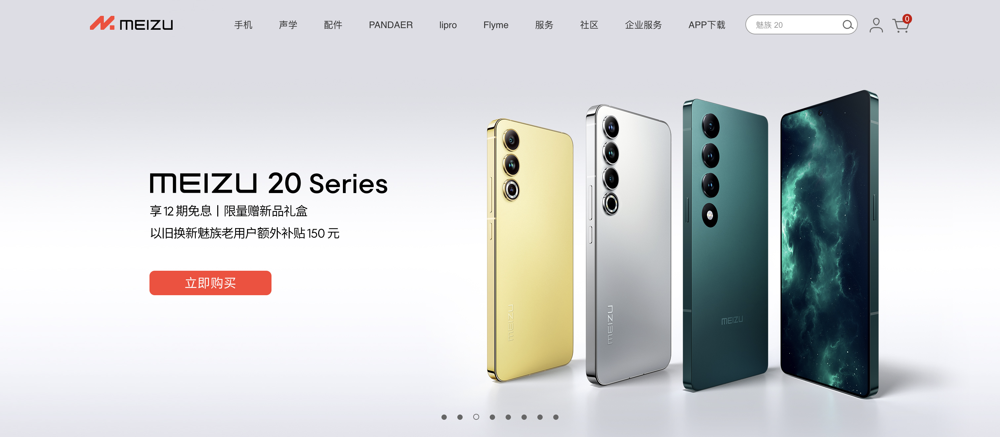
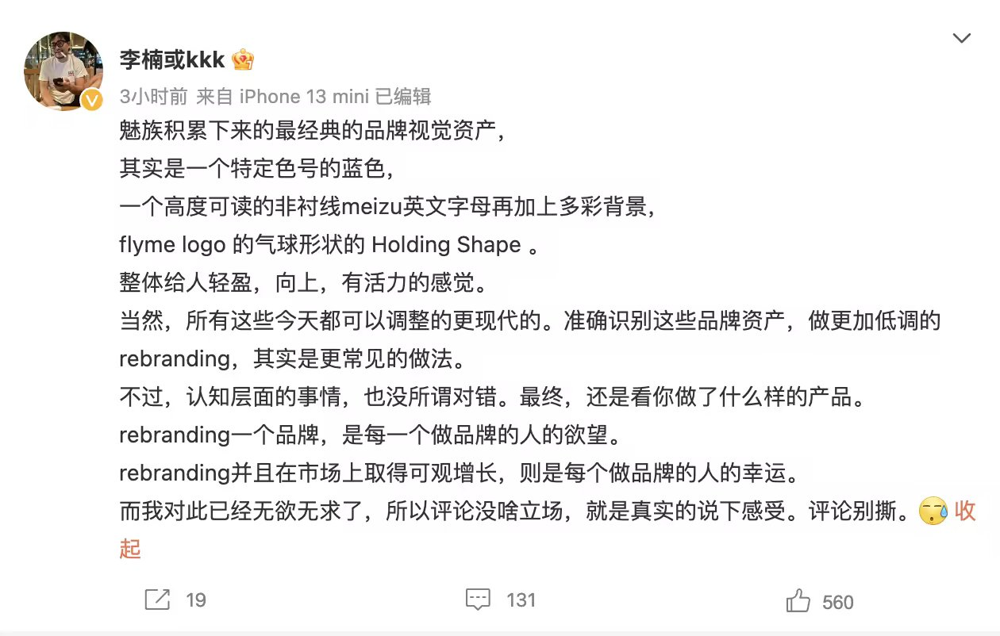
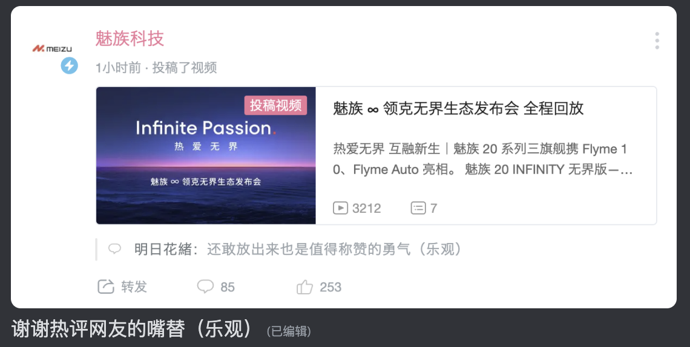
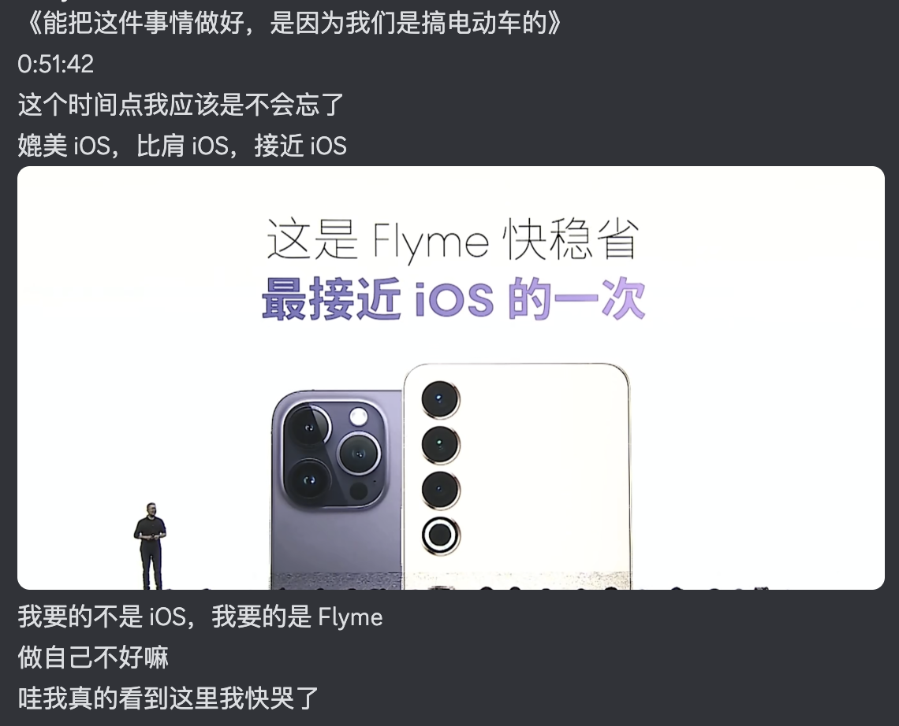
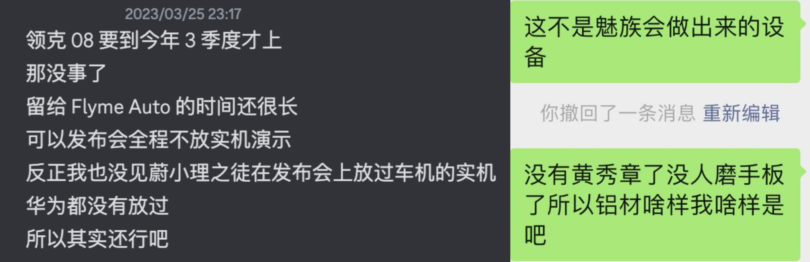

这是一场无实物表演。
没有人想在 2023 年的今天，买一台 6.55 英寸 1080P 鸭排辣眼屏幕的魅族 20；
也没有人能在 2023 年的今天，踏踏实实安安心心抢到一台魅族 20 Pro。
比小米 13 Ultra 还难抢，「有种你拿货来卖啊」！
啊，领克 08 还没开卖啊，那没事了。
但没事，我还有 Music card，MX4，PRO 6 和 16。
其实发布会那天，我已经忙到完全忘记了还有魅族的发布会，突然想起来打开直播间之后，我得到了卡到我头疼的直播画面。
去和朋友聊了聊，他回答我：「去看领克汽车直播间」。
啊，确实，流畅了，Anyway。

那天的我有些失语。
第一件事是换 Logo 就和新王朝诞生第一件事是换年号一样。
魅族 Logo 高度可读的无衬线字体，Flyme 轻盈的气球意象，还有那抹蓝色，那抹梦想的蓝色是魅族最重要的品牌资产。
那抹蓝色是最重要的。
在魅族抛弃这抹蓝色之后，它的内核就已经变了。

沈子瑜讲车明显比讲手机清晰且富有激情。
我不知道有多少魅友忍着无奈与愤怒看完了那场发布会直播。抱歉我并没忍住，我之后回顾的重播。但是流畅的视频和我如潮水般涌出的愤怒不止该去向何处。
整场发布会洋溢着的都是对品牌的傲慢和对产品的无知，甚至不知道自己家（现在应该算是自己家了）的智能家居品牌念 Lipro [‘laɪprəʊ]。
我不想聊 Flyme。
Flyme 确实吸引我。即使完全没有 Flyme 10 只有 Flyme 9，也依旧是我心中最出色的 Android 定制系统，「因为优雅永不过时」。
但 Flyme 10 是历史上最不 Flyme 的一次。
因为总是 Flyme 与 iOS 有着相似的追求，但仍然有自己的魂魄。
别「接近 iOS」了，我要的是更好的「Flyme」。
如果我要的是 iOS 我为什么不去买 iPhone？
因为领克 08 ？这台车真的这么吸引我吗？
可能是沈总喜欢 iPhone 吧，大概。
那沈总那台魅族 20 Pro 的边框抛的咋样啊？

在 Logo 和标志色变化之后，我其实已经完全不在意硬件软件到底是什么样了。无论是 iPhone 皮的三星还是带着 iOS 气味的 ColorOS 什么的真的已经完全不在意了。Logo 奇怪的摆放位置以及宣传绘神奇的排版和字体什么的我真的已经完全不在意了，完全不在意了……
只是失望，但是这份失望什么都代表不了。
不知道为什么，我突然动了心去看了一遍 MX4 的发布会。我是真的很喜欢 MX4，也很喜欢 Flyme 4。那是我心中魅族的巅峰，比 Pro 5 还巅峰的那种。但是当我回头时，发现曾经叫「魅族科技」的 B 站账号改名叫「魅蓝手机」最后现在叫「Pandaer 官方」。这或许能给魅族最混沌的纪念画下一个巧妙的注脚。
我曾在魅族 17 的时候写过的一句话，现在我用到了小米 10 Ultra 的评测里去了：「追求材质是落后于时代的」。追求那些「非核心」甚至连痒点都不是的「高额体验提升」是会出事情的。Pro 7 不就是嘛，一个极好的例子。
但是我就是欣赏魅族这种稀奇古怪的精神。
毕竟它带给我们的「创新」，总能让我们眼前一亮。
就像那些小圆圈、mBack、mTouch、SmartBar 一样。
而现在的魅族，甚至连材质都不追求了。
我不知道它在追求什么。
它或许在追求「接近 iOS」，而这个我并不关心。

我似乎一语成谶。
其实就这个角度来说的话，我就不知道为什么魅族 20 要等领克 08 了。
可能只是中年领导的「自我沉迷」，
也可能是魅族自身的「自我沉沦」。
但无论是怎样，很多事情已经失去了意义。
我要在这些支离的碎片中，如何拼凑我记忆中的那个「魅族」呢？
でもそんな悠長な理想論は、ここで捨てなくちゃな。
バイバイ「イエスタデイ」、ごめんね。
但这种悠长啰嗦的理想主义，我不得不在这里舍弃了。
再见了「Yesterday」，我很抱歉。Official 髭男 dism - イエスタデイ (Yesterday)
「人生有梦，各自精彩」。
即使你们依旧存在，我或许也应该从这场梦中「毕业」了。
山回路转不见君，雪上空留马行处。
就这样吧，应该也是最后一次了。